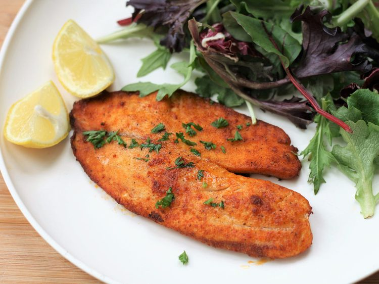

Air Fryer Tilapia
Description
Tilapia cooked in the air fryer is ready in minutes. Crusted in Parmesan cheese it comes out wonderfully moist and flavorful. Serve with rice pilaf or roasted veggies.
Recipe by France C | Published on January 25, 2023
Ingredients
- 1 ½ cup freshly grated Parmesan cheese
- 1 ½ teaspoons paprika
- 1 teaspoon garlic powder
- ½ teaspoon salt
- ½ teaspoon freshly ground black pepper
- 4 (6 ounce) tilapia fillets, thawed if frozen
- cooking spray
- 1 tablespoon minced fresh parsley (Optional)
- 4 lemon wedges (optional)
Steps
- Preheat the air fryer to 400 degrees F (200 degrees C).
- Combine Parmesan cheese, paprika, garlic powder, salt, and pepper in a bowl.
- Pat tilapia filets dry with paper towels. Spritz both sides with cooking spray, then press both sides of the filets into the Parmesan mixture. Shake off any excess, then spray again with cooking spray. Place in the basket of the air fryer.
- Cook until the fish flakes easily with a fork, 6 to 8 minutes. You may need to cook the fish in 2 batches, depending on the size of your air fryer.
- Sprinkle with parsley and serve with lemon wedges.
Cook's Note:
This recipe was developed using a 5 quart basket-style air fryer. Cooking time may vary if using a different style or size.